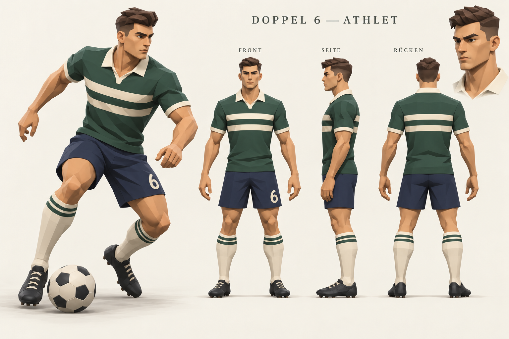

Doppel 6 · Fußballfigur in BlenderDer neue Athlet im Fußballtrikot
Überarbeitete Anatomie, kürzerer Hals und ein eigener Kopf mit kurzen Haaren. Polotrikot, Shorts, Stutzen und Fußballschuhe greifen die Konzepttafel auf. Vier Ansichten zeigen die Figur und eine statische Ballpose.
 Vorne · neutrales Modell
Vorne · neutrales Modell
 Seite · Körperlängen und Haltung
Seite · Körperlängen und Haltung
 Rücken · Schulter- und Beinform
Rücken · Schulter- und Beinform
 Ballpose · statische Formstudie
Ballpose · statische Formstudie
Gesicht und Zielgestaltung
 Tatsächlicher Modellkopf · Gesicht und modellierte Frisur.
Tatsächlicher Modellkopf · Gesicht und modellierte Frisur.

Konzeptzeichnung · visuelle Vorlage für den weiteren Ausbau.